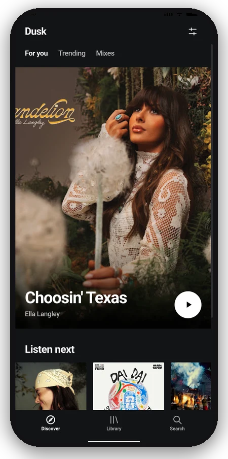
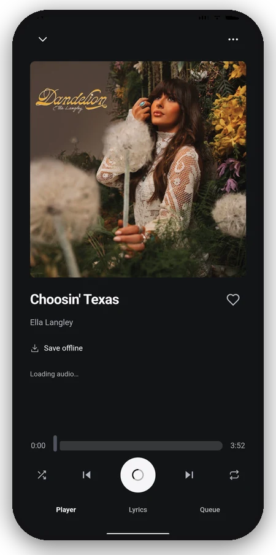
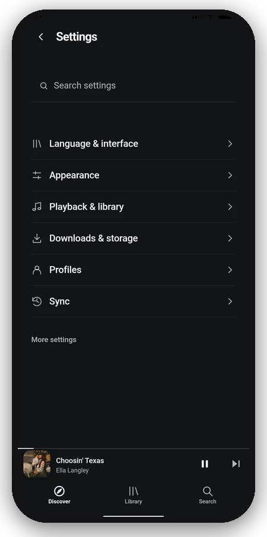

album
GET DUSK
Dusk Music
Windows · iPhone · Android · browser
Windows
Desktop app with playbar, themes, and optional Discord presence.
iPhone
Build or grab an IPA, sign with your sideloading tool, trust the profile.
Android & browser
Capacitor APK or local preview of the same UI.
graphic_eq
PLAYER



Sources without a store lock
YouTube, YouTube Music, and SoundCloud in one player. Local library and offline when you need it.
No ads. No account.
Open source under MIT. Lyrics, EQ, themes — cover first, chrome second.
hub
CHANNELS